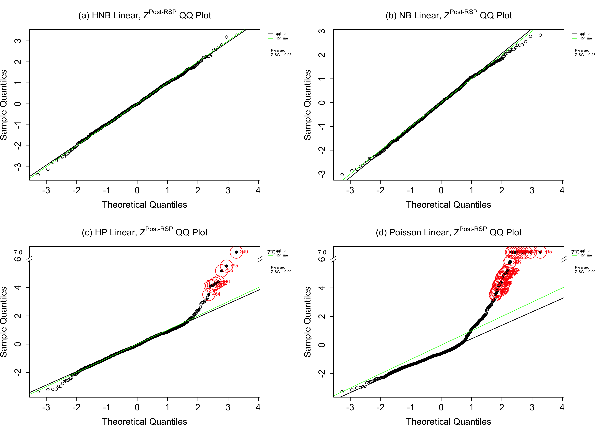
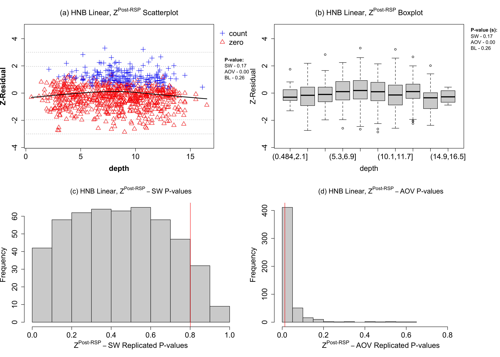
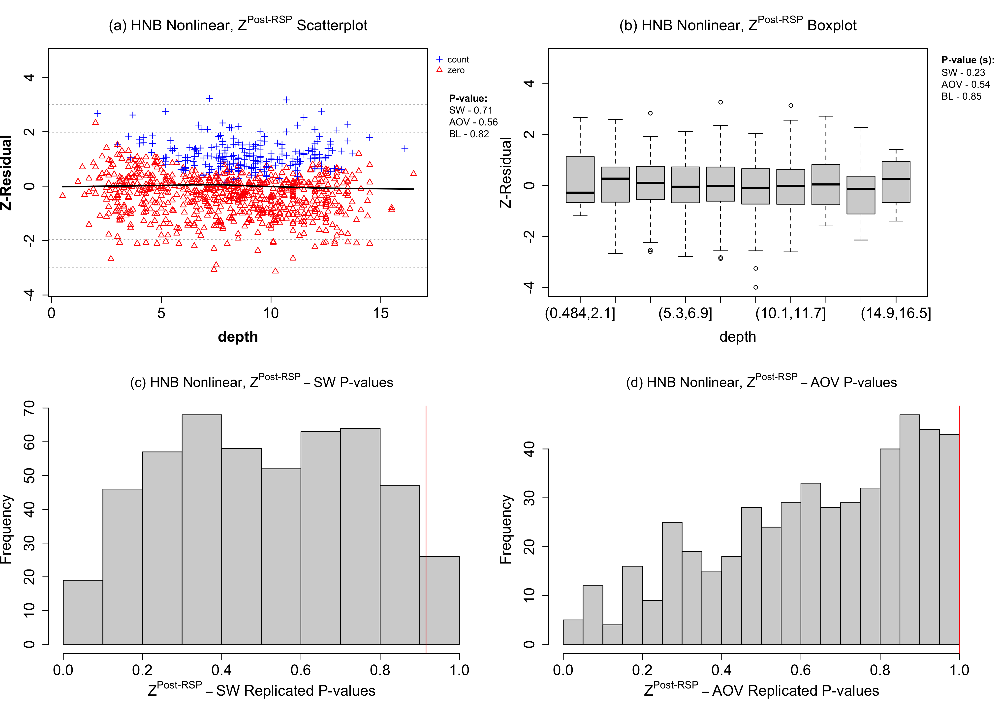

Bayesian Z-residual Diagnostics for Dolphin-Sighting Counts (demo: section 4)
A real-data discrete regression example
2026-07-06
Source:vignettes/articles/demo-hurdleNB-realdata.qmd
1 Overview
This demo illustrates a practical workflow for Bayesian model diagnostics with Z-residuals in a real discrete-response regression problem. The response variable is a count with many zeros, so we compare Poisson, negative binomial, hurdle Poisson, and hurdle negative binomial models. The workflow first checks the overall residual distribution, then examines residual patterns against covariates, especially water depth. We also compare Z-residual diagnostics with posterior predictive checks (PPC), holdout predictive checks (HPC), and LOO expected log predictive density.
2 Installing Zresidual and Other packages
2.1 Installing Zresidual from the Source
2.2 Installing and Loading R Packages Used in This Demo
Code
# Vector of required packages
pkgs <- c(
"brms", "statip", "VGAM", "plotrix", "actuar",
"stringr", "Rlab", "dplyr", "rlang", "tidyr",
"matrixStats", "timeDate", "katex", "gt","loo"
)
# Check for missing packages and install if needed
missing_pkgs <- pkgs[!pkgs %in% installed.packages()[, "Package"]]
if (length(missing_pkgs) > 0) {
message("Installing missing packages: ", paste(missing_pkgs, collapse = ", "))
renv::install(missing_pkgs, dependencies = TRUE)
} else {
message("All required packages are already installed.")
}
# Load all packages
invisible(lapply(pkgs, library, character.only = TRUE))
options(mc.cores = parallel::detectCores())
library(Zresidual)3 Load the Dolphin-Sighting Dataset
This demo analyzes a dolphin-sighting count dataset with n=936 observations. The response is the count of dolphin sightings. The covariates include water depth (\texttt{depth}), water temperature (\texttt{temp}), distance to the river mouth (\texttt{dr}, indexing the estuarine–coastal gradient), \texttt{salinity}, \texttt{turbidity}, survey \texttt{year}, and a location identifier.
Code
data_path <- file.path(resources_path, "DolphinsThailandV2.csv")
if (!file.exists(data_path)) {
stop(
"Cannot find the dolphin-sighting dataset: ", data_path,
"
Expected file name: DolphinsThailandV2.csv",
call. = FALSE
)
}
Dolphins <- read.csv(data_path)
Dolphins$year <- as.factor(Dolphins$year)
prop_zero <- mean(Dolphins$sightings == 0, na.rm = TRUE)
# proportion of zeros
cat("Proportion of Zeros:", prop_zero)Proportion of Zeros: 0.75641034 Diagnosing Four Linear Models
4.1 Fitting Hurdle NB, Hurdle Poisson, NB, and Poisson Models
Because zeros are prevalent, we fit four linear count models: hurdle Poisson (HP), hurdle negative binomial (HNB), Poisson, and negative binomial (NB). These models provide a simple starting point for checking both the response family and the assumed linear covariate effects.
Code
# The model fitting takes a long time. Hence the fitted model object is provided.
filename <- file.path(resources_path, "fit_Dolphins.Rdata")
if (forcerefit || !file.exists(filename)) {
Dolphins_count_formula <- formula(paste("sightings ~ depth + temp + dr + salinity + turbidity + year "))
Dolphins_zero_formula <- formula(paste("hu ~ depth + temp + dr + salinity + turbidity + year "))
Dolphins_hnb <- brm(
bf(Dolphins_count_formula, Dolphins_zero_formula),
data = Dolphins,
family = hurdle_negbinomial(link = "log", link_shape = "identity", link_hu = "logit"),
save_pars = save_pars(all = TRUE),
refresh = 0
)
Dolphins_hp <- brm(
bf(Dolphins_count_formula, Dolphins_zero_formula),
data = Dolphins,
family = hurdle_poisson(link = "log", link_hu = "logit"),
save_pars = save_pars(all = TRUE),
refresh = 0
)
Dolphins_nb <- brm(
Dolphins_count_formula,
data = Dolphins,
family = brms::negbinomial(link = "log", link_shape = "identity"),
save_pars = save_pars(all = TRUE),
refresh = 0
)
Dolphins_pois <- brm(
Dolphins_count_formula,
data = Dolphins,
family = poisson(link = "log"),
save_pars = save_pars(all = TRUE),
refresh = 0
)
save(Dolphins_hnb, Dolphins_hp, Dolphins_nb, Dolphins_pois, file = filename)
} else {
base::load(filename)
}4.2 Computing Z-Residuals (Posterior)
We first fit each family with \texttt{linear} covariate effects and evaluate overall GOF using posterior RSP Z–residuals.
Code
library(Zresidual)
zres_linear_post_file <- file.path(resources_path, "zres_linear_post_list_all.rds")
zres_linear_iscv_file <- file.path(resources_path, "zres_linear_iscv_list_all.rds")
required_linear_zres_names <- c("HNB", "HP", "NB", "Poisson")
if (
!force_recompute_zres &&
file.exists(zres_linear_post_file) &&
file.exists(zres_linear_iscv_file)
) {
zres_linear_post_list <- readRDS(zres_linear_post_file)
zres_linear_iscv_list <- readRDS(zres_linear_iscv_file)
missing_post <- setdiff(required_linear_zres_names, names(zres_linear_post_list))
missing_iscv <- setdiff(required_linear_zres_names, names(zres_linear_iscv_list))
if (length(missing_post) || length(missing_iscv)) {
stop(
"Saved linear Z-residual files do not contain the expected model names.
",
"Missing from posterior list: ", paste(missing_post, collapse = ", "), "
",
"Missing from ISCV list: ", paste(missing_iscv, collapse = ", "),
call. = FALSE
)
}
} else {
zres_linear_post_list <- list(
HNB = Zresidual(Dolphins_hnb, data = Dolphins, mcmc_summarize = "post", nrep = nrep_z),
HP = Zresidual(Dolphins_hp, data = Dolphins, mcmc_summarize = "post", nrep = nrep_z),
NB = Zresidual(Dolphins_nb, data = Dolphins, mcmc_summarize = "post", nrep = nrep_z),
Poisson = Zresidual(Dolphins_pois, data = Dolphins, mcmc_summarize = "post", nrep = nrep_z)
)
zres_linear_iscv_list <- list(
HNB = Zresidual(Dolphins_hnb, data = Dolphins, mcmc_summarize = "iscv", nrep = nrep_z),
HP = Zresidual(Dolphins_hp, data = Dolphins, mcmc_summarize = "iscv", nrep = nrep_z),
NB = Zresidual(Dolphins_nb, data = Dolphins, mcmc_summarize = "iscv", nrep = nrep_z),
Poisson = Zresidual(Dolphins_pois, data = Dolphins, mcmc_summarize = "iscv", nrep = nrep_z)
)
saveRDS(zres_linear_post_list, zres_linear_post_file)
saveRDS(zres_linear_iscv_list, zres_linear_iscv_file)
}
Dolphins_zres_post_rpp_hnb <- zres_linear_post_list$HNB
Dolphins_zres_post_rpp_hp <- zres_linear_post_list$HP
Dolphins_zres_post_rpp_nb <- zres_linear_post_list$NB
Dolphins_zres_post_rpp_pois <- zres_linear_post_list$Poisson
Dolphins_zres_iscv_rpp_hnb <- zres_linear_iscv_list$HNB
Dolphins_zres_iscv_rpp_hp <- zres_linear_iscv_list$HP
Dolphins_zres_iscv_rpp_nb <- zres_linear_iscv_list$NB
Dolphins_zres_iscv_rpp_pois <- zres_linear_iscv_list$Poisson4.3 Inspecting the Normality of Z-Residuals for Checking Overall GOF
Figure 1 shows QQ–plots of posterior RSP Z–residuals. The QQ-plots of the HNB and NB models adhere closely to the diagonal lines, suggesting adequate fit, whereas the QQ-plots of the HP and Poisson models deviate markedly from the diagonal lines, especially in their upper tails. The Z^{\text{Post-RSP}}\text{-SW} p-values beside the QQ-plots also confirm numerically these impressions: HNB and NB models having p-values \geq 0.05 (no rejection) versus HP and Poisson both having <0.01 p-values (clear rejection). It is clear that the Poisson family cannot model well the strong overdispersion and the hurdle modification does not improve it.
Code
par(mfrow = c(2,2))
qqnorm(Dolphins_zres_post_rpp_hnb,irep = 2,
main=expression("(a) HNB Linear, " * Z^"Post-RSP" * " QQ Plot"),
cex.main=1.5,cex.lab=1.5, cex.axis=1.5, my.mar = c(5, 4, 4, 6) + 0.1,cex = 1.0)
qqnorm(Dolphins_zres_post_rpp_nb,irep = 2,
main=expression("(b) NB Linear, " * Z^"Post-RSP" * " QQ Plot"),
cex.main=1.5,cex.lab=1.5, cex.axis=1.5, my.mar = c(5, 4, 4, 6) + 0.1,cex = 1.0)
qqnorm(Dolphins_zres_post_rpp_hp,irep = 2,
main=expression("(c) HP Linear, " * Z^"Post-RSP" * " QQ Plot"),
cex.main=1.5,cex.lab=1.5, cex.axis=1.5, my.mar = c(5, 4, 4, 6) + 0.1,cex = 1.0)
qqnorm(Dolphins_zres_post_rpp_pois,irep = 2,
main=expression("(d) Poisson Linear, " * Z^"Post-RSP" * " QQ Plot"),
cex.main=1.5,cex.lab=1.5, cex.axis=1.5, my.mar = c(5, 4, 4,6) + 0.1,cex = 1.0)
par(mfrow = c(1,1))
4.4 Diagnostic Tests
For each candidate model (HNB, NB, HP, Poisson) we compute posterior Z-residuals and conduct: (i) marginal normality via the Shapiro–Wilk test; (ii) functional-form checks via ANOVA of Z-residuals across strata of the covariate \texttt{depth}; and (iii) an omnibus statistic \chi^2_z=\sum_{i=1}^n z_i^2 compared to \chi^2_{\nu} with \nu=n-p_{\mathrm{eff}}, where p_{\mathrm{eff}} is the effective number of parameters used in WAIC and LOOCV approximations. For discrete outcomes, we re-randomize the auxiliary uniforms J=500 times, compute the replicated test p-values, and report a single conservative summary via the distribution-free upper-bound p-value (upper_bound_pvalue).
Code
pv_hnb <- sw.test.zresid(Dolphins_zres_post_rpp_hnb)
pv_nb <- sw.test.zresid(Dolphins_zres_post_rpp_nb)
pv_hp <- sw.test.zresid(Dolphins_zres_post_rpp_hp)
pv_pois <- sw.test.zresid(Dolphins_zres_post_rpp_pois)
depth_aov_hnb <- aov.test.zresid(Dolphins_zres_post_rpp_hnb, X = "depth")
depth_aov_nb <- aov.test.zresid(Dolphins_zres_post_rpp_nb, X = "depth")
depth_aov_hp <- aov.test.zresid(Dolphins_zres_post_rpp_hp, X = "depth")
depth_aov_pois <- aov.test.zresid(Dolphins_zres_post_rpp_pois, X = "depth")
lp_aov_hnb <- aov.test.zresid(Dolphins_zres_post_rpp_hnb, X = "lp")
lp_aov_nb <- aov.test.zresid(Dolphins_zres_post_rpp_nb, X = "lp")
lp_aov_hp <- aov.test.zresid(Dolphins_zres_post_rpp_hp, X = "lp")
lp_aov_pois <- aov.test.zresid(Dolphins_zres_post_rpp_pois, X = "lp")
pv_hnb_iscv <- sw.test.zresid(Dolphins_zres_iscv_rpp_hnb)
pv_nb_iscv <- sw.test.zresid(Dolphins_zres_iscv_rpp_nb)
pv_hp_iscv <- sw.test.zresid(Dolphins_zres_iscv_rpp_hp)
pv_pois_iscv <- sw.test.zresid(Dolphins_zres_iscv_rpp_pois)
depth_aov_hnb_iscv <- aov.test.zresid(Dolphins_zres_iscv_rpp_hnb, X = "depth")
depth_aov_nb_iscv <- aov.test.zresid(Dolphins_zres_iscv_rpp_nb, X = "depth")
depth_aov_hp_iscv <- aov.test.zresid(Dolphins_zres_iscv_rpp_hp, X = "depth")
depth_aov_pois_iscv <- aov.test.zresid(Dolphins_zres_iscv_rpp_pois, X = "depth")
lp_aov_hnb_iscv <- aov.test.zresid(Dolphins_zres_iscv_rpp_hnb, X = "lp")
lp_aov_nb_iscv <- aov.test.zresid(Dolphins_zres_iscv_rpp_nb, X = "lp")
lp_aov_hp_iscv <- aov.test.zresid(Dolphins_zres_iscv_rpp_hp, X = "lp")
lp_aov_pois_iscv <- aov.test.zresid(Dolphins_zres_iscv_rpp_pois, X = "lp")
p_effective_hnb <- loo(Dolphins_hnb, moment_match = TRUE)$estimates["p_loo", "Estimate"]
p_effective_nb <- loo(Dolphins_nb, moment_match = TRUE)$estimates["p_loo", "Estimate"]
p_effective_hp <- loo(Dolphins_hp, moment_match = TRUE)$estimates["p_loo", "Estimate"]
p_effective_pois <- loo(Dolphins_pois, moment_match = TRUE)$estimates["p_loo", "Estimate"]
n_obs <- nrow(Dolphins_zres_post_rpp_hnb)
ncols <- min(
500L,
ncol(Dolphins_zres_post_rpp_hnb),
ncol(Dolphins_zres_post_rpp_nb),
ncol(Dolphins_zres_post_rpp_hp),
ncol(Dolphins_zres_post_rpp_pois),
ncol(Dolphins_zres_iscv_rpp_hnb),
ncol(Dolphins_zres_iscv_rpp_nb),
ncol(Dolphins_zres_iscv_rpp_hp),
ncol(Dolphins_zres_iscv_rpp_pois)
)
chisq_zres_post_rpp_hnb <- numeric(ncols)
chisq_zres_post_rpp_nb <- numeric(ncols)
chisq_zres_post_rpp_hp <- numeric(ncols)
chisq_zres_post_rpp_pois <- numeric(ncols)
chisq_zres_iscv_rpp_hnb <- numeric(ncols)
chisq_zres_iscv_rpp_nb <- numeric(ncols)
chisq_zres_iscv_rpp_hp <- numeric(ncols)
chisq_zres_iscv_rpp_pois <- numeric(ncols)
chisq_post_rpp_hnb <- numeric(ncols)
chisq_post_rpp_nb <- numeric(ncols)
chisq_post_rpp_hp <- numeric(ncols)
chisq_post_rpp_pois <- numeric(ncols)
chisq_iscv_rpp_hnb <- numeric(ncols)
chisq_iscv_rpp_nb <- numeric(ncols)
chisq_iscv_rpp_hp <- numeric(ncols)
chisq_iscv_rpp_pois <- numeric(ncols)
for (i in seq_len(ncols)) {
chisq_zres_post_rpp_hnb[i] <- sum(Dolphins_zres_post_rpp_hnb[, i]^2, na.rm = TRUE)
chisq_zres_post_rpp_nb[i] <- sum(Dolphins_zres_post_rpp_nb[, i]^2, na.rm = TRUE)
chisq_zres_post_rpp_hp[i] <- sum(Dolphins_zres_post_rpp_hp[, i]^2, na.rm = TRUE)
chisq_zres_post_rpp_pois[i] <- sum(Dolphins_zres_post_rpp_pois[, i]^2, na.rm = TRUE)
chisq_zres_iscv_rpp_hnb[i] <- sum(Dolphins_zres_iscv_rpp_hnb[, i]^2, na.rm = TRUE)
chisq_zres_iscv_rpp_nb[i] <- sum(Dolphins_zres_iscv_rpp_nb[, i]^2, na.rm = TRUE)
chisq_zres_iscv_rpp_hp[i] <- sum(Dolphins_zres_iscv_rpp_hp[, i]^2, na.rm = TRUE)
chisq_zres_iscv_rpp_pois[i] <- sum(Dolphins_zres_iscv_rpp_pois[, i]^2, na.rm = TRUE)
chisq_post_rpp_hnb[i] <- pchisq(q = chisq_zres_post_rpp_hnb[i], df = n_obs - p_effective_hnb, lower.tail = FALSE)
chisq_post_rpp_nb[i] <- pchisq(q = chisq_zres_post_rpp_nb[i], df = n_obs - p_effective_nb, lower.tail = FALSE)
chisq_post_rpp_hp[i] <- pchisq(q = chisq_zres_post_rpp_hp[i], df = n_obs - p_effective_hp, lower.tail = FALSE)
chisq_post_rpp_pois[i] <- pchisq(q = chisq_zres_post_rpp_pois[i], df = n_obs - p_effective_pois, lower.tail = FALSE)
chisq_iscv_rpp_hnb[i] <- pchisq(q = chisq_zres_iscv_rpp_hnb[i], df = n_obs, lower.tail = FALSE)
chisq_iscv_rpp_nb[i] <- pchisq(q = chisq_zres_iscv_rpp_nb[i], df = n_obs, lower.tail = FALSE)
chisq_iscv_rpp_hp[i] <- pchisq(q = chisq_zres_iscv_rpp_hp[i], df = n_obs, lower.tail = FALSE)
chisq_iscv_rpp_pois[i] <- pchisq(q = chisq_zres_iscv_rpp_pois[i], df = n_obs, lower.tail = FALSE)
}
pv_hnb = upper_bound_pvalue(pv_hnb)
pv_nb = upper_bound_pvalue(pv_nb)
pv_hp = upper_bound_pvalue(pv_hp)
pv_pois = upper_bound_pvalue(pv_pois)
depth_aov_hnb = upper_bound_pvalue(depth_aov_hnb)
depth_aov_nb = upper_bound_pvalue(depth_aov_nb)
depth_aov_hp = upper_bound_pvalue(depth_aov_hp)
depth_aov_pois = upper_bound_pvalue(depth_aov_pois)
lp_aov_hnb = upper_bound_pvalue(lp_aov_hnb)
lp_aov_nb = upper_bound_pvalue(lp_aov_nb)
lp_aov_hp = upper_bound_pvalue(lp_aov_hp)
lp_aov_pois = upper_bound_pvalue(lp_aov_pois)
chisq_hnb_cap = upper_bound_pvalue(chisq_post_rpp_hnb)
chisq_nb_cap = upper_bound_pvalue(chisq_post_rpp_nb)
chisq_hp_cap = upper_bound_pvalue(chisq_post_rpp_hp)
chisq_pois_cap = upper_bound_pvalue(chisq_post_rpp_pois)
pv_hnb_iscv = upper_bound_pvalue(pv_hnb_iscv)
pv_nb_iscv = upper_bound_pvalue(pv_nb_iscv)
pv_hp_iscv = upper_bound_pvalue(pv_hp_iscv)
pv_pois_iscv = upper_bound_pvalue(pv_pois_iscv)
depth_aov_hnb_iscv = upper_bound_pvalue(depth_aov_hnb_iscv)
depth_aov_nb_iscv = upper_bound_pvalue(depth_aov_nb_iscv)
depth_aov_hp_iscv = upper_bound_pvalue(depth_aov_hp_iscv)
depth_aov_pois_iscv = upper_bound_pvalue(depth_aov_pois_iscv)
lp_aov_hnb_iscv = upper_bound_pvalue(lp_aov_hnb_iscv)
lp_aov_nb_iscv = upper_bound_pvalue(lp_aov_nb_iscv)
lp_aov_hp_iscv = upper_bound_pvalue(lp_aov_hp_iscv)
lp_aov_pois_iscv = upper_bound_pvalue(lp_aov_pois_iscv)
chisq_hnb_iscv_cap = upper_bound_pvalue(chisq_iscv_rpp_hnb)
chisq_nb_iscv_cap = upper_bound_pvalue(chisq_iscv_rpp_nb)
chisq_hp_iscv_cap = upper_bound_pvalue(chisq_iscv_rpp_hp)
chisq_pois_iscv_cap = upper_bound_pvalue(chisq_iscv_rpp_pois)4.5 Inspecting Trends of Z-Residuals for Checking Functional Forms
We next examine whether the linear covariate specification is adequate. For the linear HNB model, the posterior Z-residuals plotted against \texttt{depth} show a clear U-shaped pattern (?@fig-zresid-2a), and the grouped boxplots show systematic location changes across depth intervals (?@fig-zresid-2b). The grouped AOV diagnostic therefore targets the residual mean differences across depth groups, rather than only checking the marginal residual distribution. The replicated p-value histograms in ?@fig-zresid-2c–d show why this targeted diagnostic is useful: the SW test is mostly non-significant, while the depth-based AOV p-values are concentrated near zero. This indicates that the main deficiency is a nonlinear depth effect, not simply a global departure from normality.
Code
par(mfrow = c(2,2))
xmax1=max(range(sw.test.zresid(Dolphins_zres_post_rpp_hnb),
aov.test.zresid(Dolphins_zres_post_rpp_hnb,X ="depth")))
xmin1=min(range(sw.test.zresid(Dolphins_zres_post_rpp_hnb),
aov.test.zresid(Dolphins_zres_post_rpp_hnb,X ="depth")))
plot (Dolphins_zres_post_rpp_hnb,irep = 7, x_axis_var="depth",
normality.test=c("SW", "AOV", "BL"),
main.title=expression("(a) HNB Linear, " * Z^"Post-RSP" * " Scatterplot"),
cex.main=1.5,cex.lab=1.5, cex.axis=1.5,
cex = 1.5)
lines(lowess(Dolphins$depth,Dolphins_zres_post_rpp_hnb[,2]),lwd = 2)
boxplot(Dolphins_zres_post_rpp_hnb,irep = 7,x_axis_var="depth",
main.title=expression("(b) HNB Linear, " * Z^"Post-RSP" * " Boxplot"),
cex.main=1.5,cex.lab=1.5, cex.axis=1.5)
hist(sw.test.zresid(Dolphins_zres_post_rpp_hnb),
main=expression("(c) HNB Linear, " * Z^"Post-RSP"-SW * " P-values"),
xlab=expression(Z^"Post-RSP"-SW * " Replicated P-values"),
cex.main=1.4,cex.lab=1.5, cex.axis=1.5)
abline(v=upper_bound_pvalue(sw.test.zresid(Dolphins_zres_post_rpp_hnb)),col="red")
hist(aov.test.zresid(Dolphins_zres_post_rpp_hnb,X ="depth"),
main=expression("(d) HNB Linear, " * Z^"Post-RSP"-AOV * " P-values"),
breaks=20,
cex.main=1.4,cex.lab=1.5, cex.axis=1.5,
xlab=expression(Z^"Post-RSP"-AOV * " Replicated P-values"),xlim=c(xmin1,xmax1))
abline(v=upper_bound_pvalue(aov.test.zresid(Dolphins_zres_post_rpp_hnb,X ="depth")),col="red")
4.6 Z-residual Diagnostic Table for Linear Models
The table reports diagnostic p-values based on Z-residuals for four linear count models (HNB, NB, HP, Poisson), listing posterior Z-residual tests (Z-SW, Z-AOV with covariate \texttt{depth}, and Z-\chi^2 with effective d.f.).
Code
library(dplyr)
library(gt)
df_linear <- data.frame(
"Func.Form" = c("Linear", "Linear", "Linear", "Linear"),
"Family" = c("HNB", "NB", "HP", "Pois"),
# Posterior Z-residual tests
Z_SW_post = c(pv_hnb, pv_nb, pv_hp, pv_pois),
Z_AOV_lp_post = c(lp_aov_hnb, lp_aov_nb, lp_aov_hp, lp_aov_pois),
Z_AOV_depth_post = c(depth_aov_hnb, depth_aov_nb, depth_aov_hp, depth_aov_pois),
Z_Chisq_post = c(chisq_hnb_cap, chisq_nb_cap, chisq_hp_cap, chisq_pois_cap),
# ISCV Z-residual tests
Z_SW_iscv = c(pv_hnb_iscv, pv_nb_iscv, pv_hp_iscv, pv_pois_iscv),
Z_AOV_lp_iscv = c(lp_aov_hnb_iscv, lp_aov_nb_iscv, lp_aov_hp_iscv, lp_aov_pois_iscv),
Z_AOV_depth_iscv = c(depth_aov_hnb_iscv, depth_aov_nb_iscv, depth_aov_hp_iscv, depth_aov_pois_iscv),
Z_Chisq_iscv = c(chisq_hnb_iscv_cap, chisq_nb_iscv_cap, chisq_hp_iscv_cap, chisq_pois_iscv_cap)
)
df_linear %>%
mutate(`Func.Form` = ifelse(dplyr::row_number() > 1, "", `Func.Form`)) %>%
gt() %>%
cols_label(
Func.Form = "Func. Form",
Family = "Family",
Z_SW_post = "Z-SW",
Z_AOV_lp_post = "Z-AOV-lp",
Z_AOV_depth_post = "Z-AOV-depth",
Z_Chisq_post = md("$Z\\text{-}\\chi^2$"),
Z_SW_iscv = "Z-SW",
Z_AOV_lp_iscv = "Z-AOV-lp",
Z_AOV_depth_iscv = "Z-AOV-depth",
Z_Chisq_iscv = md("$Z\\text{-}\\chi^2$")
) %>%
tab_spanner(
label = "Posterior Z-Residual Tests",
columns = c(Z_SW_post, Z_AOV_lp_post, Z_AOV_depth_post, Z_Chisq_post)
) %>%
tab_spanner(
label = "ISCV Z-Residual Tests",
columns = c(Z_SW_iscv, Z_AOV_lp_iscv, Z_AOV_depth_iscv, Z_Chisq_iscv)
) %>%
fmt_number(
columns = c(
Z_SW_post, Z_AOV_lp_post, Z_AOV_depth_post, Z_Chisq_post,
Z_SW_iscv, Z_AOV_lp_iscv, Z_AOV_depth_iscv, Z_Chisq_iscv
),
decimals = 3
) %>%
cols_width(`Func.Form` ~ px(95), Family ~ px(70)) %>%
cols_align(align = "left", columns = c(`Func.Form`, Family))lp) and water depth (depth).
| Func. Form | Family |
Posterior Z-Residual Tests
|
ISCV Z-Residual Tests
|
||||||
|---|---|---|---|---|---|---|---|---|---|
| Z-SW | Z-AOV-lp | Z-AOV-depth | Z\text{-}\chi^2 | Z-SW | Z-AOV-lp | Z-AOV-depth | Z\text{-}\chi^2 | ||
| Linear | HNB | 0.801 | 0.914 | 0.013 | 0.812 | 0.449 | 0.985 | 0.015 | 0.675 |
| NB | 0.326 | 0.029 | 0.012 | 0.923 | 0.895 | 0.023 | 0.009 | 0.742 | |
| HP | 0.000 | 0.766 | 0.022 | 0.000 | 0.000 | 0.759 | 0.020 | 0.000 | |
| Pois | 0.000 | 0.503 | 0.015 | 0.000 | 0.000 | 0.466 | 0.015 | 0.000 | |
4.7 PPC and HPC Helper Functions
The next helper functions extract the main values returned by ppc() and hpc() into rectangular tables. These summaries include Pearson chi-square checks on the data scale and Z-residual-based SW and AOV checks.
Code
.null_or <- function(x, y) {
if (is.null(x) || length(x) == 0L) y else x
}
.get_named_aov_value <- function(obj, target) {
vals <- obj$aov_rpp_all
if (is.null(vals) || length(vals) == 0L) {
vals <- obj$aov_rpp
}
if (is.null(vals) || length(vals) == 0L || all(is.na(vals))) {
return(NA_real_)
}
nm <- names(vals)
if (is.null(nm)) {
if (length(vals) == 1L && identical(target, "lp")) {
return(unname(as.numeric(vals[1L])))
}
return(NA_real_)
}
exact_names <- c(
target,
paste0("AOV[", target, "]"),
paste0("Z-AOV[", target, "]")
)
idx <- which(nm %in% exact_names)
if (length(idx) == 0L) {
idx <- grep(paste0("\\[", target, "\\]"), nm)
}
if (length(idx) == 0L) {
idx <- grep(paste0("(^|[^[:alnum:]_])", target, "([^[:alnum:]_]|$)"), nm)
}
if (length(idx) == 0L) {
return(NA_real_)
}
unname(as.numeric(vals[idx[1L]]))
}
.extract_predcheck_values <- function(obj) {
c(
Chisq = as.numeric(.null_or(obj$chisq, NA_real_)),
Z_SW_randomized_mean = as.numeric(.null_or(obj$sw_rpp, .null_or(obj$mean_sw_pv, NA_real_))),
Z_SW_midpoint = as.numeric(.null_or(obj$sw_mpp, NA_real_)),
Z_AOV_lp = .get_named_aov_value(obj, "lp"),
Z_AOV_depth = .get_named_aov_value(obj, "depth")
)
}
.make_predcheck_table <- function(func_form, family, ppc_list, hpc_list) {
ppc_vals <- t(vapply(ppc_list, .extract_predcheck_values, numeric(5L)))
hpc_vals <- t(vapply(hpc_list, .extract_predcheck_values, numeric(5L)))
colnames(ppc_vals) <- paste0("PPC_", colnames(ppc_vals))
colnames(hpc_vals) <- paste0("HPC_", colnames(hpc_vals))
data.frame(
Func.Form = func_form,
Family = family,
ppc_vals,
hpc_vals,
check.names = FALSE
)
}
.render_predcheck_gt <- function(tab) {
tab %>%
gt() %>%
cols_label(
Func.Form = "Func. Form",
Family = "Family",
PPC_Chisq = md("$\\chi^2$"),
PPC_Z_SW_randomized_mean = "Z-SW RSP mean",
PPC_Z_SW_midpoint = "Z-SW MPP",
PPC_Z_AOV_lp = "Z-AOV[lp]",
PPC_Z_AOV_depth = "Z-AOV[depth]",
HPC_Chisq = md("$\\chi^2$"),
HPC_Z_SW_randomized_mean = "Z-SW RSP mean",
HPC_Z_SW_midpoint = "Z-SW MPP",
HPC_Z_AOV_lp = "Z-AOV[lp]",
HPC_Z_AOV_depth = "Z-AOV[depth]"
) %>%
tab_spanner(
label = "PPC",
columns = c(PPC_Chisq, PPC_Z_SW_randomized_mean, PPC_Z_SW_midpoint,
PPC_Z_AOV_lp, PPC_Z_AOV_depth)
) %>%
tab_spanner(
label = "HPC",
columns = c(HPC_Chisq, HPC_Z_SW_randomized_mean, HPC_Z_SW_midpoint,
HPC_Z_AOV_lp, HPC_Z_AOV_depth)
) %>%
fmt_number(
columns = c(PPC_Chisq, PPC_Z_SW_randomized_mean, PPC_Z_SW_midpoint,
PPC_Z_AOV_lp, PPC_Z_AOV_depth,
HPC_Chisq, HPC_Z_SW_randomized_mean, HPC_Z_SW_midpoint,
HPC_Z_AOV_lp, HPC_Z_AOV_depth),
decimals = 3
) %>%
cols_width(Func.Form ~ px(95), Family ~ px(70)) %>%
cols_align(align = "left", columns = c(Func.Form, Family)) %>%
tab_options(table.align = "center")
}4.8 PPC
Code
ndraws_use <- 4000
seed_use <- 123
x_check <- c("lp", "depth")
ppc_linear_file <- file.path(resources_path, "ppc_linear_list_all.rds")
if (!force_recompute_ppc_hpc && file.exists(ppc_linear_file)) {
ppc_linear_list <- readRDS(ppc_linear_file)
} else {
ppc_linear_list <- list(
HNB = ppc(fit = Dolphins_hnb, data = Dolphins, x = x_check,
ndraws = ndraws_use, seed = seed_use, randomized = TRUE),
NB = ppc(fit = Dolphins_nb, data = Dolphins, x = x_check,
ndraws = ndraws_use, seed = seed_use, randomized = TRUE),
HP = ppc(fit = Dolphins_hp, data = Dolphins, x = x_check,
ndraws = ndraws_use, seed = seed_use, randomized = TRUE),
Poisson = ppc(fit = Dolphins_pois, data = Dolphins, x = x_check,
ndraws = ndraws_use, seed = seed_use, randomized = TRUE)
)
saveRDS(ppc_linear_list, ppc_linear_file)
}
ppc_hnb <- ppc_linear_list$HNB
ppc_nb <- ppc_linear_list$NB
ppc_hp <- ppc_linear_list$HP
ppc_pois <- ppc_linear_list$Poisson4.9 HPC
Code
filename_hpc_linear <- file.path(resources_path, "fit_Dolphins_linear_train_for_hpc.Rdata")
hpc_linear_file <- file.path(resources_path, "hpc_linear_list_all.rds")
if (!forcerefit && file.exists(filename_hpc_linear)) {
message("Loading linear training-data fitted models from: ", filename_hpc_linear)
load(filename_hpc_linear)
} else {
message("Creating holdout split, fitting linear training-data models, and saving to: ", filename_hpc_linear)
set.seed(20260514)
# Stratified holdout split so that the zero proportion is roughly preserved.
zero_id <- which(Dolphins$sightings == 0)
pos_id <- which(Dolphins$sightings > 0)
hpc_id <- c(
sample(zero_id, size = floor(0.25 * length(zero_id))),
sample(pos_id, size = floor(0.25 * length(pos_id)))
)
hpc_id <- sort(hpc_id)
Dolphins_train <- Dolphins[-hpc_id, , drop = FALSE]
Dolphins_hpc <- Dolphins[ hpc_id, , drop = FALSE]
Dolphins_count_formula_linear <- sightings ~ depth + temp + dr + salinity + turbidity + year
Dolphins_zero_formula_linear <- hu ~ depth + temp + dr + salinity + turbidity + year
Dolphins_hnb_train <- brm(
bf(Dolphins_count_formula_linear, Dolphins_zero_formula_linear),
data = Dolphins_train,
family = hurdle_negbinomial(link = "log", link_shape = "identity", link_hu = "logit"),
save_pars = save_pars(all = TRUE),
refresh = 0
)
Dolphins_hp_train <- brm(
bf(Dolphins_count_formula_linear, Dolphins_zero_formula_linear),
data = Dolphins_train,
family = hurdle_poisson(link = "log", link_hu = "logit"),
save_pars = save_pars(all = TRUE),
refresh = 0
)
Dolphins_nb_train <- brm(
Dolphins_count_formula_linear,
data = Dolphins_train,
family = brms::negbinomial(link = "log", link_shape = "identity"),
save_pars = save_pars(all = TRUE),
refresh = 0
)
Dolphins_pois_train <- brm(
Dolphins_count_formula_linear,
data = Dolphins_train,
family = poisson(link = "log"),
save_pars = save_pars(all = TRUE),
refresh = 0
)
save(
Dolphins_train, Dolphins_hpc,
Dolphins_hnb_train, Dolphins_hp_train, Dolphins_nb_train, Dolphins_pois_train,
file = filename_hpc_linear
)
}
if (!force_recompute_ppc_hpc && file.exists(hpc_linear_file)) {
hpc_linear_list <- readRDS(hpc_linear_file)
} else {
hpc_linear_list <- list(
HNB = hpc(fit = Dolphins_hnb_train, newdata = Dolphins_hpc, x = x_check,
ndraws = ndraws_use, seed = seed_use, randomized = TRUE),
NB = hpc(fit = Dolphins_nb_train, newdata = Dolphins_hpc, x = x_check,
ndraws = ndraws_use, seed = seed_use, randomized = TRUE),
HP = hpc(fit = Dolphins_hp_train, newdata = Dolphins_hpc, x = x_check,
ndraws = ndraws_use, seed = seed_use, randomized = TRUE),
Poisson = hpc(fit = Dolphins_pois_train, newdata = Dolphins_hpc, x = x_check,
ndraws = ndraws_use, seed = seed_use, randomized = TRUE)
)
saveRDS(hpc_linear_list, hpc_linear_file)
}
hpc_hnb <- hpc_linear_list$HNB
hpc_nb <- hpc_linear_list$NB
hpc_hp <- hpc_linear_list$HP
hpc_pois <- hpc_linear_list$Poisson4.10 PPC and HPC Diagnostic Table
Code
predcheck_linear_table <- data.frame(
`Func.Form` = c("Linear", "Linear", "Linear", "Linear"),
Family = c("HNB", "NB", "HP", "Pois"),
PPC_Chisq = c(ppc_hnb$chisq, ppc_nb$chisq, ppc_hp$chisq, ppc_pois$chisq),
PPC_Z_SW_randomized_mean = c(ppc_hnb$sw_rpp, ppc_nb$sw_rpp, ppc_hp$sw_rpp, ppc_pois$sw_rpp),
PPC_Z_SW_midpoint = c(ppc_hnb$sw_mpp, ppc_nb$sw_mpp, ppc_hp$sw_mpp, ppc_pois$sw_mpp),
PPC_Z_AOV_lp = c(ppc_hnb$aov_rpp_all[["AOV[lp]"]], ppc_nb$aov_rpp_all[["AOV[lp]"]], ppc_hp$aov_rpp_all[["AOV[lp]"]], ppc_pois$aov_rpp_all[["AOV[lp]"]]),
PPC_Z_AOV_depth = c(ppc_hnb$aov_rpp_all[["AOV[depth]"]], ppc_nb$aov_rpp_all[["AOV[depth]"]], ppc_hp$aov_rpp_all[["AOV[depth]"]], ppc_pois$aov_rpp_all[["AOV[depth]"]]),
HPC_Chisq = c(hpc_hnb$chisq, hpc_nb$chisq, hpc_hp$chisq, hpc_pois$chisq),
HPC_Z_SW_randomized_mean = c(hpc_hnb$sw_rpp, hpc_nb$sw_rpp, hpc_hp$sw_rpp, hpc_pois$sw_rpp),
HPC_Z_SW_midpoint = c(hpc_hnb$sw_mpp, hpc_nb$sw_mpp, hpc_hp$sw_mpp, hpc_pois$sw_mpp),
HPC_Z_AOV_lp = c(hpc_hnb$aov_rpp_all[["AOV[lp]"]], hpc_nb$aov_rpp_all[["AOV[lp]"]], hpc_hp$aov_rpp_all[["AOV[lp]"]], hpc_pois$aov_rpp_all[["AOV[lp]"]]),
HPC_Z_AOV_depth = c(hpc_hnb$aov_rpp_all[["AOV[depth]"]], hpc_nb$aov_rpp_all[["AOV[depth]"]], hpc_hp$aov_rpp_all[["AOV[depth]"]], hpc_pois$aov_rpp_all[["AOV[depth]"]]),
check.names = FALSE
)
predcheck_linear_table %>%
mutate(`Func.Form` = ifelse(dplyr::row_number() > 1, "", `Func.Form`)) %>%
gt() %>%
cols_label(
`Func.Form` = "Func. Form",
Family = "Family",
PPC_Chisq = md("$\\chi^2$"),
PPC_Z_SW_randomized_mean = "Z-SW RSP mean",
PPC_Z_SW_midpoint = "Z-SW MPP",
PPC_Z_AOV_lp = "Z-AOV-lp",
PPC_Z_AOV_depth = "Z-AOV-depth",
HPC_Chisq = md("$\\chi^2$"),
HPC_Z_SW_randomized_mean = "Z-SW RSP mean",
HPC_Z_SW_midpoint = "Z-SW MPP",
HPC_Z_AOV_lp = "Z-AOV-lp",
HPC_Z_AOV_depth = "Z-AOV-depth"
) %>%
tab_spanner(
label = "PPC",
columns = c(PPC_Chisq, PPC_Z_SW_randomized_mean, PPC_Z_SW_midpoint,
PPC_Z_AOV_lp, PPC_Z_AOV_depth)
) %>%
tab_spanner(
label = "HPC",
columns = c(HPC_Chisq, HPC_Z_SW_randomized_mean, HPC_Z_SW_midpoint,
HPC_Z_AOV_lp, HPC_Z_AOV_depth)
) %>%
fmt_number(
columns = c(PPC_Chisq, PPC_Z_SW_randomized_mean, PPC_Z_SW_midpoint,
PPC_Z_AOV_lp, PPC_Z_AOV_depth,
HPC_Chisq, HPC_Z_SW_randomized_mean, HPC_Z_SW_midpoint,
HPC_Z_AOV_lp, HPC_Z_AOV_depth),
decimals = 3
) %>%
cols_width(`Func.Form` ~ px(95), Family ~ px(70)) %>%
cols_align(align = "left", columns = c(`Func.Form`, Family)) %>%
tab_options(table.align = "center")| Func. Form | Family |
PPC
|
HPC
|
||||||||
|---|---|---|---|---|---|---|---|---|---|---|---|
| \chi^2 | Z-SW RSP mean | Z-SW MPP | Z-AOV-lp | Z-AOV-depth | \chi^2 | Z-SW RSP mean | Z-SW MPP | Z-AOV-lp | Z-AOV-depth | ||
| Linear | HNB | 0.016 | 0.301 | 0.285 | 0.419 | 0.033 | 0.333 | 0.271 | 0.504 | 0.429 | 0.403 |
| NB | 0.531 | 0.387 | 0.475 | 0.152 | 0.025 | 0.884 | 0.254 | 0.524 | 0.322 | 0.410 | |
| HP | 0.001 | 0.000 | 0.000 | 0.455 | 0.041 | 0.419 | 0.023 | 0.370 | 0.427 | 0.416 | |
| Pois | 0.000 | 0.000 | 0.000 | 0.300 | 0.014 | 0.000 | 0.000 | 0.000 | 0.156 | 0.475 | |
5 Diagnosing HNB and NB Nonlinear Models
5.1 Fitting Two Nonlinear Models with a Piecewise Quadratic Function for Depth
The linear HNB diagnostics suggest that a simple linear effect of \texttt{depth} is inadequate. To demonstrate one possible refinement, we use a piecewise quadratic effect with a turning point at \texttt{depth}=7.95, motivated by the residual pattern in ?@fig-zresid-2a. We create two variables: \texttt{below7.95} = \{(\texttt{depth}-7.95)^2\}\,\mathbf{1}(\texttt{depth}<7.95) \texttt{above7.95} = \{(\texttt{depth}-7.95)^2\}\,\mathbf{1}(\texttt{depth}\ge 7.95).
Code
filename <- file.path(resources_path, "fit_Dolphins_nl2.Rdata")
# Set forcerefit to TRUE if you want to override the saved file
if (!exists("forcerefit")) forcerefit <- FALSE
if (forcerefit || !file.exists(filename)) {
Dolphins$below8 <- ifelse(Dolphins$depth < 7.95, (Dolphins$depth - 7.95)^2, 0)
Dolphins$above8 <- ifelse(Dolphins$depth >= 7.95, (Dolphins$depth - 7.95)^2, 0)
Dolphins_count_formula_nl2 <- formula(paste("sightings ~ below8 + above8 + temp + dr + salinity + turbidity + (year) "))
Dolphins_zero_formula_nl2 <- formula(paste("hu ~ below8 + above8 + temp + dr + salinity + turbidity + (year) "))
Dolphins_hnb_nl2 <- brm(
bf(Dolphins_count_formula_nl2, Dolphins_zero_formula_nl2),
data = Dolphins,
family = hurdle_negbinomial(link = "log", link_shape = "identity", link_hu = "logit"),
save_pars = save_pars(all = TRUE),
refresh = 0
)
Dolphins_nb_nl2 <- brm(
Dolphins_count_formula_nl2,
data = Dolphins,
family = brms::negbinomial(link = "log", link_shape = "identity"),
save_pars = save_pars(all = TRUE),
refresh = 0
)
save(Dolphins_hnb_nl2, Dolphins_nb_nl2, file = filename)
} else{
base::load(filename)
}
Dolphins$below8 <- ifelse(Dolphins$depth < 7.95, (Dolphins$depth - 7.95)^2, 0)
Dolphins$above8 <- ifelse(Dolphins$depth >= 7.95, (Dolphins$depth - 7.95)^2, 0)5.2 Computing Z-Residuals
After refitting the HNB and NB models with the piecewise quadratic depth terms, we recompute posterior and ISCV RSP Z-residuals.
Code
zres_nonlinear_post_file <- file.path(resources_path, "zres_nonlinear_post_list_all.rds")
zres_nonlinear_iscv_file <- file.path(resources_path, "zres_nonlinear_iscv_list_all.rds")
required_nonlinear_zres_names <- c("HNB", "NB")
if (
!force_recompute_zres &&
file.exists(zres_nonlinear_post_file) &&
file.exists(zres_nonlinear_iscv_file)
) {
zres_nonlinear_post_list <- readRDS(zres_nonlinear_post_file)
zres_nonlinear_iscv_list <- readRDS(zres_nonlinear_iscv_file)
missing_post <- setdiff(required_nonlinear_zres_names, names(zres_nonlinear_post_list))
missing_iscv <- setdiff(required_nonlinear_zres_names, names(zres_nonlinear_iscv_list))
if (length(missing_post) || length(missing_iscv)) {
stop(
"Saved nonlinear Z-residual files do not contain the expected model names.\n",
"Missing from posterior list: ", paste(missing_post, collapse = ", "), "\n",
"Missing from ISCV list: ", paste(missing_iscv, collapse = ", "),
call. = FALSE
)
}
} else {
zres_nonlinear_post_list <- list(
HNB = Zresidual(Dolphins_hnb_nl2, data = Dolphins, mcmc_summarize = "post", nrep = nrep_z),
NB = Zresidual(Dolphins_nb_nl2, data = Dolphins, mcmc_summarize = "post", nrep = nrep_z)
)
zres_nonlinear_iscv_list <- list(
HNB = Zresidual(Dolphins_hnb_nl2, data = Dolphins, mcmc_summarize = "iscv", nrep = nrep_z),
NB = Zresidual(Dolphins_nb_nl2, data = Dolphins, mcmc_summarize = "iscv", nrep = nrep_z)
)
saveRDS(zres_nonlinear_post_list, zres_nonlinear_post_file)
saveRDS(zres_nonlinear_iscv_list, zres_nonlinear_iscv_file)
}
Dolphins_zres_post_rpp_hnb_nl2 <- zres_nonlinear_post_list$HNB
Dolphins_zres_post_rpp_nb_nl2 <- zres_nonlinear_post_list$NB
Dolphins_zres_iscv_rpp_hnb_nl2 <- zres_nonlinear_iscv_list$HNB
Dolphins_zres_iscv_rpp_nb_nl2 <- zres_nonlinear_iscv_list$NB5.3 Diagnostic Tests
We repeat the linear-model diagnostic pipeline for the nonlinear specifications (nonlinear HNB and NB models). For each posterior draw we compute Z-residuals and run SW normality tests, ANOVA of Z-residuals against the covariate \texttt{depth} using binned fitted values with safeguards for sparse bins, and an omnibus Z–chi-squared test with effective degrees of freedom obtained from PSIS–LOO.
Code
pv_hnb_nl2 <- sw.test.zresid(Dolphins_zres_post_rpp_hnb_nl2)
pv_nb_nl2 <- sw.test.zresid(Dolphins_zres_post_rpp_nb_nl2)
pv_hnb_iscv_nl2 <- sw.test.zresid(Dolphins_zres_iscv_rpp_hnb_nl2)
pv_nb_iscv_nl2 <- sw.test.zresid(Dolphins_zres_iscv_rpp_nb_nl2)
aov_depth_hnb_nl2 <- aov.test.zresid(Dolphins_zres_post_rpp_hnb_nl2, X = "depth")
aov_depth_nb_nl2 <- aov.test.zresid(Dolphins_zres_post_rpp_nb_nl2, X = "depth")
aov_depth_hnb_iscv_nl2 <- aov.test.zresid(Dolphins_zres_iscv_rpp_hnb_nl2, X = "depth")
aov_depth_nb_iscv_nl2 <- aov.test.zresid(Dolphins_zres_iscv_rpp_nb_nl2, X = "depth")
aov_lp_hnb_nl2 <- aov.test.zresid(Dolphins_zres_post_rpp_hnb_nl2, X = "lp")
aov_lp_nb_nl2 <- aov.test.zresid(Dolphins_zres_post_rpp_nb_nl2, X = "lp")
aov_lp_hnb_iscv_nl2 <- aov.test.zresid(Dolphins_zres_iscv_rpp_hnb_nl2, X = "lp")
aov_lp_nb_iscv_nl2 <- aov.test.zresid(Dolphins_zres_iscv_rpp_nb_nl2, X = "lp")
p_effective_hnb_nl2 <- loo(Dolphins_hnb_nl2, moment_match = TRUE)$estimates["p_loo", "Estimate"]
p_effective_nb_nl2 <- loo(Dolphins_nb_nl2, moment_match = TRUE)$estimates["p_loo", "Estimate"]
n_obs <- nrow(Dolphins_zres_post_rpp_hnb_nl2)
ncols <- min(500L, ncol(Dolphins_zres_post_rpp_hnb_nl2), ncol(Dolphins_zres_post_rpp_nb_nl2),
ncol(Dolphins_zres_iscv_rpp_hnb_nl2), ncol(Dolphins_zres_iscv_rpp_nb_nl2))
chisq_zres_post_rpp_hnb_nl2 <- numeric(ncols)
chisq_zres_post_rpp_nb_nl2 <- numeric(ncols)
chisq_post_rpp_hnb_nl2 <- numeric(ncols)
chisq_post_rpp_nb_nl2 <- numeric(ncols)
chisq_zres_iscv_rpp_hnb_nl2 <- numeric(ncols)
chisq_zres_iscv_rpp_nb_nl2 <- numeric(ncols)
chisq_iscv_rpp_hnb_nl2 <- numeric(ncols)
chisq_iscv_rpp_nb_nl2 <- numeric(ncols)
for (i in seq_len(ncols)) {
chisq_zres_post_rpp_hnb_nl2[i] <- sum(Dolphins_zres_post_rpp_hnb_nl2[, i]^2, na.rm = TRUE)
chisq_zres_post_rpp_nb_nl2[i] <- sum(Dolphins_zres_post_rpp_nb_nl2[, i]^2, na.rm = TRUE)
chisq_zres_iscv_rpp_hnb_nl2[i] <- sum(Dolphins_zres_iscv_rpp_hnb_nl2[, i]^2, na.rm = TRUE)
chisq_zres_iscv_rpp_nb_nl2[i] <- sum(Dolphins_zres_iscv_rpp_nb_nl2[, i]^2, na.rm = TRUE)
chisq_post_rpp_hnb_nl2[i] <- pchisq(q = chisq_zres_post_rpp_hnb_nl2[i], df = n_obs - p_effective_hnb_nl2, lower.tail = FALSE)
chisq_post_rpp_nb_nl2[i] <- pchisq(q = chisq_zres_post_rpp_nb_nl2[i], df = n_obs - p_effective_nb_nl2, lower.tail = FALSE)
chisq_iscv_rpp_hnb_nl2[i] <- pchisq(q = chisq_zres_iscv_rpp_hnb_nl2[i], df = n_obs, lower.tail = FALSE)
chisq_iscv_rpp_nb_nl2[i] <- pchisq(q = chisq_zres_iscv_rpp_nb_nl2[i], df = n_obs, lower.tail = FALSE)
}5.4 Inspecting Trends of Z-Residuals for Checking Functional Forms
In Figure 3, the residual scatterplot and grouped boxplots for the nonlinear HNB model no longer show the strong U-shaped depth pattern seen in the linear fit. The replicated p-value histograms for both Z^{\text{Post-RSP}}\text{-SW} and the depth-based Z^{\text{Post-RSP}}\text{-AOV} test are mostly away from zero, supporting the adequacy of the nonlinear depth specification for this candidate model.
Code
par(mfrow = c(2,2))
xmax1=max(range(sw.test.zresid(Dolphins_zres_post_rpp_hnb_nl2),aov_depth_hnb_nl2))
xmin1=min(range(sw.test.zresid(Dolphins_zres_post_rpp_hnb_nl2),aov_depth_hnb_nl2))
plot (Dolphins_zres_post_rpp_hnb_nl2,irep = 8,
x_axis_var=Dolphins$depth,normality.test=c("SW", "AOV", "BL"),
main.title=expression("(a) HNB Nonlinear, " * Z^"Post-RSP" * " Scatterplot"),
xlab="depth",
cex.main=1.5,cex.lab=1.5, cex.axis=1.5
#,cex = 1.5)
)
lines(lowess(Dolphins$depth,Dolphins_zres_post_rpp_hnb_nl2[,8]),lwd = 2)
boxplot(Dolphins_zres_post_rpp_hnb_nl2,irep = 2,x_axis_var=Dolphins$depth,
main.title=expression("(b) HNB Nonlinear, " * Z^"Post-RSP" * " Boxplot"),
xlab="depth",
cex.main=1.5,cex.lab=1.5, cex.axis=1.5
# ,cex = 1.5)
)
hist(sw.test.zresid(Dolphins_zres_post_rpp_hnb_nl2),
main=expression("(c) HNB Nonlinear, " * Z^"Post-RSP"-SW * " P-values"),
xlab=expression(Z^"Post-RSP"-SW * " Replicated P-values"),xlim=c(xmin1,xmax1),
cex.main=1.4,cex.lab=1.5, cex.axis=1.5)
abline(v=upper_bound_pvalue(sw.test.zresid(Dolphins_zres_post_rpp_hnb_nl2)),col="red")
hist(aov_depth_hnb_nl2,
main=expression("(d) HNB Nonlinear, " * Z^"Post-RSP"-AOV * " P-values"),
breaks=20,
xlab=expression(Z^"Post-RSP"-AOV * " Replicated P-values"),xlim=c(xmin1,xmax1),
cex.main=1.4,cex.lab=1.5, cex.axis=1.5)
abline(v=upper_bound_pvalue(aov_depth_hnb_nl2),col="red")
5.5 Z-residual Diagnostic Table for Nonlinear Models
Table 3 reports the same Z-residual diagnostics for the two nonlinear models. These values can be compared with the linear-model diagnostics to assess whether the nonlinear depth specification removes the residual pattern.
Code
library(dplyr)
library(gt)
pv_hnb_nl2_cap <- upper_bound_pvalue(pv_hnb_nl2)
pv_nb_nl2_cap <- upper_bound_pvalue(pv_nb_nl2)
aov_depth_hnb_nl <- upper_bound_pvalue(aov_depth_hnb_nl2)
aov_depth_nb_nl <- upper_bound_pvalue(aov_depth_nb_nl2)
aov_lp_hnb_nl <- upper_bound_pvalue(aov_lp_hnb_nl2)
aov_lp_nb_nl <- upper_bound_pvalue(aov_lp_nb_nl2)
chisq_hnb_nl <- upper_bound_pvalue(chisq_post_rpp_hnb_nl2)
chisq_nb_nl <- upper_bound_pvalue(chisq_post_rpp_nb_nl2)
# ISCV
pv_hnb_nl2_iscv_cap <- upper_bound_pvalue(pv_hnb_iscv_nl2)
pv_nb_nl2_iscv_cap <- upper_bound_pvalue(pv_nb_iscv_nl2)
aov_depth_hnb_nl_iscv <- upper_bound_pvalue(aov_depth_hnb_iscv_nl2)
aov_depth_nb_nl_iscv <- upper_bound_pvalue(aov_depth_nb_iscv_nl2)
aov_lp_hnb_nl_iscv <- upper_bound_pvalue(aov_lp_hnb_iscv_nl2)
aov_lp_nb_nl_iscv <- upper_bound_pvalue(aov_lp_nb_iscv_nl2)
chisq_hnb_nl_iscv <- upper_bound_pvalue(chisq_iscv_rpp_hnb_nl2)
chisq_nb_nl_iscv <- upper_bound_pvalue(chisq_iscv_rpp_nb_nl2)
results_table_nl <- data.frame(
"Func.Form" = c("Nonlinear", "Nonlinear"),
"Family" = c("HNB", "NB"),
# Posterior
Z_SW_post = c(pv_hnb_nl2_cap, pv_nb_nl2_cap),
Z_AOV_lp_post = c(aov_lp_hnb_nl, aov_lp_nb_nl),
Z_AOV_post = c(aov_depth_hnb_nl, aov_depth_nb_nl),
Z_Chisq_post = c(chisq_hnb_nl, chisq_nb_nl),
# ISCV
Z_SW_iscv = c(pv_hnb_nl2_iscv_cap, pv_nb_nl2_iscv_cap),
Z_AOV_lp_iscv = c(aov_lp_hnb_nl_iscv, aov_lp_nb_nl_iscv),
Z_AOV_iscv = c(aov_depth_hnb_nl_iscv, aov_depth_nb_nl_iscv),
Z_Chisq_iscv = c(chisq_hnb_nl_iscv, chisq_nb_nl_iscv)
)
results_table_nl %>%
mutate(`Func.Form` = ifelse(dplyr::row_number() > 1, "", `Func.Form`)) %>%
gt() %>%
cols_label(
Func.Form = "Func. Form",
Family = "Family",
Z_SW_post = "Z-SW",
Z_AOV_lp_post = "Z-AOV-lp",
Z_AOV_post = "Z-AOV-depth",
Z_Chisq_post = md("$Z\\text{-}\\chi^2$"),
Z_SW_iscv = "Z-SW",
Z_AOV_lp_iscv = "Z-AOV-lp",
Z_AOV_iscv = "Z-AOV-depth",
Z_Chisq_iscv = md("$Z\\text{-}\\chi^2$")
) %>%
tab_spanner(
label = "Posterior Z-Residual Tests",
columns = c(Z_SW_post,Z_AOV_lp_post, Z_AOV_post, Z_Chisq_post)
) %>%
tab_spanner(
label = "ISCV Z-Residual Tests",
columns = c(Z_SW_iscv,Z_AOV_lp_iscv, Z_AOV_iscv, Z_Chisq_iscv)
) %>%
fmt_number(
columns = c(
Z_SW_post, Z_AOV_lp_post, Z_AOV_post, Z_Chisq_post,
Z_SW_iscv, Z_AOV_lp_iscv, Z_AOV_iscv, Z_Chisq_iscv
),
decimals = 3
) %>%
cols_width(`Func.Form` ~ px(95), Family ~ px(70)) %>%
cols_align(align = "left", columns = c(`Func.Form`, Family))lp) and water depth (depth).
| Func. Form | Family |
Posterior Z-Residual Tests
|
ISCV Z-Residual Tests
|
||||||
|---|---|---|---|---|---|---|---|---|---|
| Z-SW | Z-AOV-lp | Z-AOV-depth | Z\text{-}\chi^2 | Z-SW | Z-AOV-lp | Z-AOV-depth | Z\text{-}\chi^2 | ||
| Nonlinear | HNB | 0.916 | 0.294 | 1.000 | 0.730 | 0.554 | 0.293 | 1.000 | 0.563 |
| NB | 0.311 | 0.709 | 0.633 | 0.876 | 0.027 | 0.788 | 0.635 | 0.571 | |
5.6 PPC and HPC for Nonlinear Models
Code
ndraws_use_nl <- ndraws_use
seed_use_nl <- seed_use
x_check_nl <- c("lp", "depth")
ppc_nonlinear_file <- file.path(resources_path, "ppc_nonlinear_list_all.rds")
hpc_nonlinear_file <- file.path(resources_path, "hpc_nonlinear_list_all.rds")
filename_hpc_nl2 <- file.path(resources_path, "fit_Dolphins_nl2_train_for_hpc.Rdata")
# PPC uses the models fitted on the full dataset.
if (!force_recompute_ppc_hpc && file.exists(ppc_nonlinear_file)) {
ppc_nonlinear_list <- readRDS(ppc_nonlinear_file)
} else {
ppc_nonlinear_list <- list(
HNB = ppc(fit = Dolphins_hnb_nl2, data = Dolphins, x = x_check_nl,
ndraws = ndraws_use_nl, seed = seed_use_nl, randomized = TRUE),
NB = ppc(fit = Dolphins_nb_nl2, data = Dolphins, x = x_check_nl,
ndraws = ndraws_use_nl, seed = seed_use_nl, randomized = TRUE)
)
saveRDS(ppc_nonlinear_list, ppc_nonlinear_file)
}
ppc_hnb_nl2 <- ppc_nonlinear_list$HNB
ppc_nb_nl2 <- ppc_nonlinear_list$NB
# HPC uses nonlinear models refitted on the training data only.
if (!forcerefit && file.exists(filename_hpc_nl2)) {
message("Loading nonlinear training-data fitted models from: ", filename_hpc_nl2)
load(filename_hpc_nl2)
} else {
message("Fitting nonlinear training-data models and saving to: ", filename_hpc_nl2)
Dolphins_train_nl <- Dolphins_train
Dolphins_hpc_nl <- Dolphins_hpc
Dolphins_train_nl$below8 <- ifelse(
Dolphins_train_nl$depth < 7.95,
(Dolphins_train_nl$depth - 7.95)^2,
0
)
Dolphins_train_nl$above8 <- ifelse(
Dolphins_train_nl$depth >= 7.95,
(Dolphins_train_nl$depth - 7.95)^2,
0
)
Dolphins_hpc_nl$below8 <- ifelse(
Dolphins_hpc_nl$depth < 7.95,
(Dolphins_hpc_nl$depth - 7.95)^2,
0
)
Dolphins_hpc_nl$above8 <- ifelse(
Dolphins_hpc_nl$depth >= 7.95,
(Dolphins_hpc_nl$depth - 7.95)^2,
0
)
Dolphins_count_formula_nl2_hpc <- sightings ~ below8 + above8 + temp + dr + salinity + turbidity + year
Dolphins_zero_formula_nl2_hpc <- hu ~ below8 + above8 + temp + dr + salinity + turbidity + year
Dolphins_hnb_nl2_train <- brm(
bf(Dolphins_count_formula_nl2_hpc, Dolphins_zero_formula_nl2_hpc),
data = Dolphins_train_nl,
family = hurdle_negbinomial(link = "log", link_shape = "identity", link_hu = "logit"),
save_pars = save_pars(all = TRUE),
refresh = 0
)
Dolphins_nb_nl2_train <- brm(
Dolphins_count_formula_nl2_hpc,
data = Dolphins_train_nl,
family = brms::negbinomial(link = "log", link_shape = "identity"),
save_pars = save_pars(all = TRUE),
refresh = 0
)
save(
Dolphins_train_nl, Dolphins_hpc_nl,
Dolphins_hnb_nl2_train, Dolphins_nb_nl2_train,
file = filename_hpc_nl2
)
}
if (!force_recompute_ppc_hpc && file.exists(hpc_nonlinear_file)) {
hpc_nonlinear_list <- readRDS(hpc_nonlinear_file)
} else {
hpc_nonlinear_list <- list(
HNB = hpc(fit = Dolphins_hnb_nl2_train, newdata = Dolphins_hpc_nl,
x = x_check_nl, ndraws = ndraws_use_nl,
seed = seed_use_nl, randomized = TRUE),
NB = hpc(fit = Dolphins_nb_nl2_train, newdata = Dolphins_hpc_nl,
x = x_check_nl, ndraws = ndraws_use_nl,
seed = seed_use_nl, randomized = TRUE)
)
saveRDS(hpc_nonlinear_list, hpc_nonlinear_file)
}
hpc_hnb_nl2 <- hpc_nonlinear_list$HNB
hpc_nb_nl2 <- hpc_nonlinear_list$NBCode
predcheck_nonlinear_table <- data.frame(
`Func.Form` = c("Nonlinear", "Nonlinear"),
Family = c("HNB", "NB"),
PPC_Chisq = c(ppc_hnb_nl2$chisq, ppc_nb_nl2$chisq),
PPC_Z_SW_randomized_mean = c(ppc_hnb_nl2$sw_rpp, ppc_nb_nl2$sw_rpp),
PPC_Z_SW_midpoint = c(ppc_hnb_nl2$sw_mpp, ppc_nb_nl2$sw_mpp),
PPC_Z_AOV_lp = c(ppc_hnb_nl2$aov_rpp_all[["AOV[lp]"]], ppc_nb_nl2$aov_rpp_all[["AOV[lp]"]]),
PPC_Z_AOV_depth = c(ppc_hnb_nl2$aov_rpp_all[["AOV[depth]"]], ppc_nb_nl2$aov_rpp_all[["AOV[depth]"]]),
HPC_Chisq = c(hpc_hnb_nl2$chisq, hpc_nb_nl2$chisq),
HPC_Z_SW_randomized_mean = c(hpc_hnb_nl2$sw_rpp, hpc_nb_nl2$sw_rpp),
HPC_Z_SW_midpoint = c(hpc_hnb_nl2$sw_mpp, hpc_nb_nl2$sw_mpp),
HPC_Z_AOV_lp = c(hpc_hnb_nl2$aov_rpp_all[["AOV[lp]"]], hpc_nb_nl2$aov_rpp_all[["AOV[lp]"]]),
HPC_Z_AOV_depth = c(hpc_hnb_nl2$aov_rpp_all[["AOV[depth]"]], hpc_nb_nl2$aov_rpp_all[["AOV[depth]"]]),
check.names = FALSE
)
predcheck_nonlinear_table %>%
mutate(`Func.Form` = ifelse(dplyr::row_number() > 1, "", `Func.Form`)) %>%
gt() %>%
cols_label(
`Func.Form` = "Func. Form",
Family = "Family",
PPC_Chisq = md("$\\chi^2$"),
PPC_Z_SW_randomized_mean = "Z-SW RSP mean",
PPC_Z_SW_midpoint = "Z-SW MPP",
PPC_Z_AOV_lp = "Z-AOV-lp",
PPC_Z_AOV_depth = "Z-AOV-depth",
HPC_Chisq = md("$\\chi^2$"),
HPC_Z_SW_randomized_mean = "Z-SW RSP mean",
HPC_Z_SW_midpoint = "Z-SW MPP",
HPC_Z_AOV_lp = "Z-AOV-lp",
HPC_Z_AOV_depth = "Z-AOV-depth"
) %>%
tab_spanner(
label = "PPC",
columns = c(PPC_Chisq, PPC_Z_SW_randomized_mean, PPC_Z_SW_midpoint,
PPC_Z_AOV_lp, PPC_Z_AOV_depth)
) %>%
tab_spanner(
label = "HPC",
columns = c(HPC_Chisq, HPC_Z_SW_randomized_mean, HPC_Z_SW_midpoint,
HPC_Z_AOV_lp, HPC_Z_AOV_depth)
) %>%
fmt_number(
columns = c(PPC_Chisq, PPC_Z_SW_randomized_mean, PPC_Z_SW_midpoint,
PPC_Z_AOV_lp, PPC_Z_AOV_depth,
HPC_Chisq, HPC_Z_SW_randomized_mean, HPC_Z_SW_midpoint,
HPC_Z_AOV_lp, HPC_Z_AOV_depth),
decimals = 3
) %>%
cols_width(`Func.Form` ~ px(95), Family ~ px(70)) %>%
cols_align(align = "left", columns = c(`Func.Form`, Family)) %>%
tab_options(table.align = "center")| Func. Form | Family |
PPC
|
HPC
|
||||||||
|---|---|---|---|---|---|---|---|---|---|---|---|
| \chi^2 | Z-SW RSP mean | Z-SW MPP | Z-AOV-lp | Z-AOV-depth | \chi^2 | Z-SW RSP mean | Z-SW MPP | Z-AOV-lp | Z-AOV-depth | ||
| Nonlinear | HNB | 0.027 | 0.309 | 0.170 | 0.452 | 0.586 | 0.342 | 0.370 | 0.526 | 0.410 | 0.387 |
| NB | 0.171 | 0.157 | 0.394 | 0.379 | 0.376 | 0.842 | 0.339 | 0.529 | 0.333 | 0.425 | |
5.7 Comparison with LOO elpd
Finally, a comparison of the models using the LOO expected log point-wise predictive density (elpd), shown in the column of Table 5, confirms that the HNB model with a nonlinear effect significantly improves the fit over the linear version and also outperforms the NB models.
Code
loo_hnb <- loo(Dolphins_hnb, moment_match = TRUE)
loo_hp <- loo(Dolphins_hp, moment_match = TRUE)
loo_nb <- loo(Dolphins_nb, moment_match = TRUE)
loo_pois <- loo(Dolphins_pois, moment_match = TRUE)
loo_hnb_nl2 <- loo(Dolphins_hnb_nl2, moment_match = TRUE)
loo_nb_nl2 <- loo(Dolphins_nb_nl2, moment_match = TRUE)
model_comparison <- loo_compare(loo_hnb, loo_hp,loo_nb,loo_pois,loo_hnb_nl2,loo_nb_nl2)
model_comparison_df <- data.frame(
Model = c(
"HNB (Nonlinear)",
"HNB (Linear)",
"NB (Nonlinear)",
"NB (Linear)",
"HP (Linear)",
"Pois (Linear)"
),
elpd_diff = c(
model_comparison[1, 1],
model_comparison[2, 1],
model_comparison[3, 1],
model_comparison[4, 1],
model_comparison[5, 1],
model_comparison[6, 1]
),
se_diff = c(
model_comparison[1, 2],
model_comparison[2, 2],
model_comparison[3, 2],
model_comparison[4, 2],
model_comparison[5, 2],
model_comparison[6, 2]
)
)
## Approximate probability of outperforming the reference model
model_comparison_df$Pr_Delta_elpd_ge_0 <- ifelse(
model_comparison_df$se_diff > 0,
pnorm(
q = 0,
mean = model_comparison_df$elpd_diff,
sd = model_comparison_df$se_diff,
lower.tail = FALSE
),
NA_real_
)
## Formatting for display
model_comparison_df_print <- model_comparison_df %>%
dplyr::mutate(
elpd_diff = sprintf("%.1f", elpd_diff),
se_diff = sprintf("%.1f", se_diff),
Pr_Delta_elpd_ge_0 = dplyr::case_when(
is.na(Pr_Delta_elpd_ge_0) ~ "Ref.",
Pr_Delta_elpd_ge_0 < 0.001 ~ "<0.001",
TRUE ~ sprintf("%.3f", Pr_Delta_elpd_ge_0)
)
)
model_comparison_df_print %>%
knitr::kable(
booktabs = TRUE,
align = c("l", "r", "r", "r"),
col.names = c(
"Model",
"$\\Delta_{\\text{elpd}}$",
"se",
"$\\Pr(\\Delta_{\\text{elpd}} \\ge 0)$"
),
escape = FALSE
)| Model | \Delta_{\text{elpd}} | se | \Pr(\Delta_{\text{elpd}} \ge 0) |
|---|---|---|---|
| HNB (Nonlinear) | 0.0 | 0.0 | Ref. |
| HNB (Linear) | -19.9 | 6.8 | 0.002 |
| NB (Nonlinear) | -34.0 | 9.9 | <0.001 |
| NB (Linear) | -42.5 | 9.9 | <0.001 |
| HP (Linear) | -118.6 | 34.4 | <0.001 |
| Pois (Linear) | -803.3 | 101.1 | <0.001 |
6 Summary of Model Diagnostics and Model Comparison
Code
library(dplyr)
library(gt)
## Z-residual diagnostic columns
z_linear <- data.frame(
Model = c("HNB", "NB", "HP", "Poisson"),
Z_SW_post = c(pv_hnb, pv_nb, pv_hp, pv_pois),
Z_AOV_depth_post = c(depth_aov_hnb, depth_aov_nb, depth_aov_hp, depth_aov_pois),
Z_Chisq_post = c(chisq_hnb_cap, chisq_nb_cap, chisq_hp_cap, chisq_pois_cap),
Z_SW_iscv = c(pv_hnb_iscv, pv_nb_iscv, pv_hp_iscv, pv_pois_iscv),
Z_AOV_depth_iscv = c(depth_aov_hnb_iscv, depth_aov_nb_iscv, depth_aov_hp_iscv, depth_aov_pois_iscv),
Z_Chisq_iscv = c(chisq_hnb_iscv_cap, chisq_nb_iscv_cap, chisq_hp_iscv_cap, chisq_pois_iscv_cap)
)
z_nonlinear <- data.frame(
Model = c("HNB", "NB"),
Z_SW_post = c(pv_hnb_nl2_cap, pv_nb_nl2_cap),
Z_AOV_depth_post = c(aov_depth_hnb_nl, aov_depth_nb_nl),
Z_Chisq_post = c(chisq_hnb_nl, chisq_nb_nl),
Z_SW_iscv = c(pv_hnb_nl2_iscv_cap, pv_nb_nl2_iscv_cap),
Z_AOV_depth_iscv = c(aov_depth_hnb_nl_iscv, aov_depth_nb_nl_iscv),
Z_Chisq_iscv = c(chisq_hnb_nl_iscv, chisq_nb_nl_iscv)
)
z_summary <- bind_rows(z_linear, z_nonlinear)
## PPC/HPC columns: keep the same summary statistics as the main applied table.
predcheck_summary <- bind_rows(
predcheck_linear_table %>% select(-`Func.Form`, -Family),
predcheck_nonlinear_table %>% select(-`Func.Form`, -Family)
) %>%
transmute(
PPC_Z_SW = PPC_Z_SW_randomized_mean,
PPC_Z_AOV = PPC_Z_AOV_depth,
PPC_Y_Chisq = PPC_Chisq,
HPC_Z_SW = HPC_Z_SW_randomized_mean,
HPC_Z_AOV = HPC_Z_AOV_depth,
HPC_Y_Chisq = HPC_Chisq
)
## LOO comparison columns in the same row order as z_summary.
loo_summary <- data.frame(
elpd_diff = c(
model_comparison[2, 1], # HNB Linear
model_comparison[4, 1], # NB Linear
model_comparison[5, 1], # HP Linear
model_comparison[6, 1], # Poisson Linear
model_comparison[1, 1], # HNB Nonlinear
model_comparison[3, 1] # NB Nonlinear
),
se_diff = c(
model_comparison[2, 2],
model_comparison[4, 2],
model_comparison[5, 2],
model_comparison[6, 2],
model_comparison[1, 2],
model_comparison[3, 2]
)
)
loo_summary$Pr_Delta_elpd_ge_0 <- ifelse(
loo_summary$se_diff > 0,
pnorm(
q = 0,
mean = loo_summary$elpd_diff,
sd = loo_summary$se_diff,
lower.tail = FALSE
),
NA_real_
)
full_results_table <- bind_cols(z_summary, predcheck_summary, loo_summary)
rows_linear <- 1:4
rows_nonlinear <- 5:6
full_results_table |>
gt() |>
cols_label(
Model = "Model",
Z_SW_post = "Z-SW",
Z_AOV_depth_post = "Z-AOV",
Z_Chisq_post = md("$Z\\text{-}\\chi^2$"),
Z_SW_iscv = "Z-SW",
Z_AOV_depth_iscv = "Z-AOV",
Z_Chisq_iscv = md("$Z\\text{-}\\chi^2$"),
PPC_Z_SW = "Z-SW",
PPC_Z_AOV = "Z-AOV",
PPC_Y_Chisq = md("$y\\text{-}\\chi^2$"),
HPC_Z_SW = "Z-SW",
HPC_Z_AOV = "Z-AOV",
HPC_Y_Chisq = md("$y\\text{-}\\chi^2$"),
elpd_diff = md("$\\Delta_{\\text{elpd}}$"),
se_diff = "SE",
Pr_Delta_elpd_ge_0 = md("$\\Pr(\\Delta_{\\text{elpd}} \\ge 0)$")
) |>
tab_spanner(
label = "Posterior Z-Residual Tests",
columns = c(Z_SW_post, Z_AOV_depth_post, Z_Chisq_post)
) |>
tab_spanner(
label = "ISCV Z-Residual Tests",
columns = c(Z_SW_iscv, Z_AOV_depth_iscv, Z_Chisq_iscv)
) |>
tab_spanner(
label = "PPC Tests",
columns = c(PPC_Z_SW, PPC_Z_AOV, PPC_Y_Chisq)
) |>
tab_spanner(
label = "HPC Tests",
columns = c(HPC_Z_SW, HPC_Z_AOV, HPC_Y_Chisq)
) |>
tab_spanner(
label = "LOO Comparison",
columns = c(elpd_diff, se_diff, Pr_Delta_elpd_ge_0)
) |>
tab_row_group(label = "Linear models", rows = rows_linear) |>
tab_row_group(label = "Nonlinear models", rows = rows_nonlinear) |>
fmt_number(
columns = c(
Z_SW_post, Z_AOV_depth_post, Z_Chisq_post,
Z_SW_iscv, Z_AOV_depth_iscv, Z_Chisq_iscv,
PPC_Z_SW, PPC_Z_AOV, PPC_Y_Chisq,
HPC_Z_SW, HPC_Z_AOV, HPC_Y_Chisq,
elpd_diff, se_diff
),
decimals = 3
) |>
fmt(
columns = Pr_Delta_elpd_ge_0,
fns = function(x) {
dplyr::case_when(
is.na(x) ~ "Ref.",
x < 0.001 ~ "<0.001",
TRUE ~ sprintf("%.3f", x)
)
}
) |>
cols_width(Model ~ px(90)) |>
cols_align(align = "left", columns = Model) |>
tab_options(table.align = "center")| Model |
Posterior Z-Residual Tests
|
ISCV Z-Residual Tests
|
PPC Tests
|
HPC Tests
|
LOO Comparison
|
||||||||||
|---|---|---|---|---|---|---|---|---|---|---|---|---|---|---|---|
| Z-SW | Z-AOV | Z\text{-}\chi^2 | Z-SW | Z-AOV | Z\text{-}\chi^2 | Z-SW | Z-AOV | y\text{-}\chi^2 | Z-SW | Z-AOV | y\text{-}\chi^2 | \Delta_{\text{elpd}} | SE | \Pr(\Delta_{\text{elpd}} \ge 0) | |
| Nonlinear models | |||||||||||||||
| HNB | 0.916 | 1.000 | 0.730 | 0.554 | 1.000 | 0.563 | 0.309 | 0.586 | 0.027 | 0.370 | 0.387 | 0.342 | 0.000 | 0.000 | Ref. |
| NB | 0.311 | 0.633 | 0.876 | 0.027 | 0.635 | 0.571 | 0.157 | 0.376 | 0.171 | 0.339 | 0.425 | 0.842 | −33.974 | 9.865 | <0.001 |
| Linear models | |||||||||||||||
| HNB | 0.801 | 0.013 | 0.812 | 0.449 | 0.015 | 0.675 | 0.301 | 0.033 | 0.016 | 0.271 | 0.403 | 0.333 | −19.873 | 6.752 | 0.002 |
| NB | 0.326 | 0.012 | 0.923 | 0.895 | 0.009 | 0.742 | 0.387 | 0.025 | 0.531 | 0.254 | 0.410 | 0.884 | −42.504 | 9.926 | <0.001 |
| HP | 0.000 | 0.022 | 0.000 | 0.000 | 0.020 | 0.000 | 0.000 | 0.041 | 0.001 | 0.023 | 0.416 | 0.419 | −118.593 | 34.406 | <0.001 |
| Poisson | 0.000 | 0.015 | 0.000 | 0.000 | 0.015 | 0.000 | 0.000 | 0.014 | 0.000 | 0.000 | 0.475 | 0.000 | −803.279 | 101.092 | <0.001 |
7 Interpretation
The linear HNB and NB models fit the marginal residual distribution much better than the Poisson-based models, but their depth-based AOV diagnostics still indicate a systematic residual pattern. After the piecewise quadratic depth terms are added, the nonlinear HNB model no longer shows the same residual mean pattern against depth and also has the best LOO elpd among the candidate models. The PPC and HPC summaries provide useful comparisons, but the traditional data-scale y-\chi^2 check can behave differently from residual-based diagnostics in sparse count data with many zeros.
In a full applied analysis, it is also useful to check whether the conclusions are robust to prior choices and to the number of bins used in the grouped AOV diagnostic.